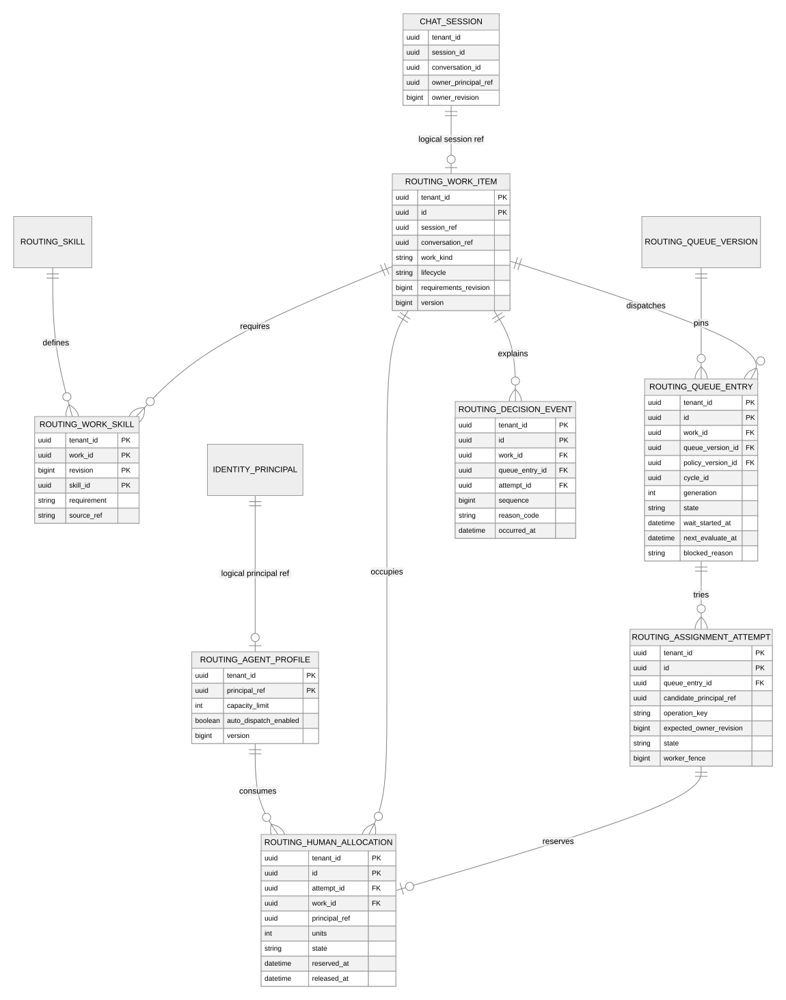
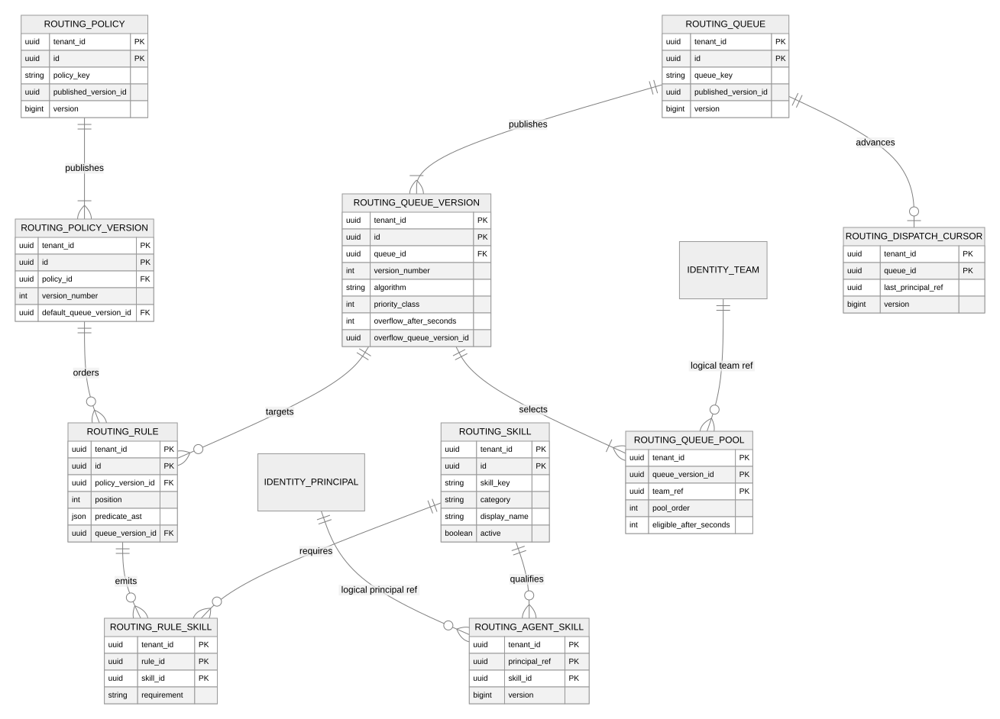

Work → Queue entry → Attempt → Allocation
Work gắn với session. Queue entry lưu việc chờ. Attempt lưu lần thử gán. Allocation giữ tải Human. Owner vẫn do Chat quản lý. Mở SVG để phóng to


Skill dùng chung · Rule linh hoạt · Queue có phiên bản
Page/ad/post/dòng sản phẩm/custom field → rule → queue + required/preferred skills. Identity quản lý team, quyền và availability. Mở SVG để phóng to


Close hoàn tất → nhả tải → đánh thức dispatcher
Flow chỉ đọc để giải thích hành vi engine. Không yêu cầu admin tự tạo vòng lặp Close → Pull. Cuộn ngang để xem toàn bộ. Mở SVG để phóng to


1 session mở = 1 slot HumanPending/snoozed vẫn chiếm tải theo đề xuất R1. Đóng tab không nhả slot.
Timeout chưa có nghĩa thất bạiGiữ reservation tới khi xác minh kết quả gán. Không double assign sau lỗi mạng.
Không tạo lại dữ liệu đã cóGiữ Identity, Chat và Workflow làm nguồn chuẩn. Slot thực thi AI tách khỏi tải Human.
Nguồn chi tiết, invariants, table review, acceptance và các gate còn mở: conversation-routing-erd.md. Sơ đồ được render bằng Mermaid 10.9.3, không phải ảnh Salesforce.